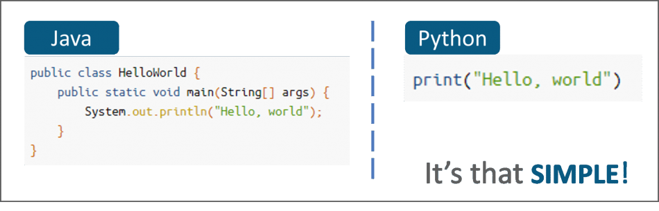

O'zbek dasturchi
Tez kunda start...
Dasturlash yoki kod yozish – bu kompyuterga ba’zi operatsiyalarni qanday bajarishni buyurishdir. Agar siz oldin hech kod yozmagan bo’lsangiz, ehtimol mavjud ilovalardagi narsalarni bosib kompyuter bilan muloqot qilgan bo’lsangiz kerak. Aslida, bu ilovalar komputerga ilovani qanday ko’rsatishni, ma’lumotlarni qayerda saqlash va olib chiqib berishni, hamda siz sichqonchani bosganinizda qanday javob qaytarishni aytadigan kodlardan tashkil topgan.
Butun dasturlash biz yuqorida muhokama qilgan informatikaning tamoyillariga asoslanadi. Shunisi diqqatga sazovorki, mantiq, algoritmlar, ma’lumotlar, tizimli loyihalashtirish kabi bir xil tushunchalar to’plami – siz hozir bu maqolani o’qishda foydalanayotgan brovzerdan tortib samolyotdagi avtopilot dasturini tuzishgacha – hamma joyda qo’llanilishi mumkin. Dasturlash o’z ichiga ko’plab matematik hisob-kitob va strukturani olsada, u yuqori darajada ijodiy ish hisoblanadi: bir qator kod bilan bir vaqtda mahsulotning tayyor holati haqida o’ylaysiz.
Dasturlashni informatika bo’yicha ta’limning bir qismi sifatida o’rganishning qator foydalari bor:
1. Uni o’zing bajar: agar siz kod yoza olsangiz, (dastur)narsalarni o’zingizga yaratib olishingiz mumkin. Soddasidan boshlashingiz mumkin: bir qancha rasmlarni nomini o’zgartirish uchun script yozish yoki soliqlarni hisoblashga yordam beradigan Excel formula yaratishingiz mumkin. Keyin, yanada tasavvurni kengaytirib: o’zingiz haqingizda sayt yaratishingiz; kompaniyangiz uchun mobil ilova yaratishingiz; o’rtoqlaringiz bilan o’ynash uchun o’yin tuzishingiz mumkin.
2. Kamchiliklarni bartaraf qilish: o’zingiz mustaqil bir nechta dastur yaratishingiz bilan, boshqa dasturlar ham soddaligini tushunib qolasiz. Kompyuterdan noma’lum bir narsa sifatida qo’rqishdan to’xtashingiz bilan, texnik yordam bo’yicha usta bo’lasiz. Texnologiya haytoning har bir jabhasiga kirib borishi bilan, undan foydalanishni bilish o’qishni bilishdek muhim bo’lib boradi.
3. Kasb: informatikani o’rganishdan maqsad professional dasturchi bo’lish emas. Biz hammamiz maktabda matematika, fizika va kimyoni o’rganamiz, biroq hammamiz professional matematik, fizik va kimyogar bo’lmaymiz. Shunday bo’lsada, agar sizda informatikaga kuchli ishtiyoq bo’lsa dasturiy ta’minot ishlab chiqish eng yuqori reytingga ega, eng ko’p maosh to’lanadigan va eng tez o’sib borayotgan ish ekanligini ko’rasiz.
Salbiy natijalarning sababi sog'lom pragmatizmning asosiy etishmasligi. Masalan, dasturlash tilini tanlashdan oldin quyidagilarni yaxshilab o'rganib chiqish kerak edi:
Yomon dasturlash tillari mavjud emasligini ham anglash kerak. Ideal holda, mutaxassis bir vaqtning o'zida ularning bir nechtasini biladi. Ammo ulardan kamida bittasini boshlash uchun tanlash kerak. Va bu JavaScript bo'lishi kerak.
Stack Overflow ishlab chiquvchilar jamoasida so'rov o'tkazildi, natijada ushbu til eng ommabop va resurs foydalanuvchilari tomonidan talab qilinadigan til ekanligi aniqlandi. Ushbu til yordamida veb-saytlarning navigatsiya elementlari va ularning server komponentlari yaratiladi. Bundan tashqari, u narsalar Internetining istiqbolli sohasida va o'yinlarni rivojlantirishda muvaffaqiyat bilan ishlatiladi.
Hozirda dasturlash tillari soni ko'p lekin ulardan qaysi birini o'rganish asosiy moummolardan biri. O'zbekistonda java, C# c++, php va javascript bu tillarni ishlatadiganlar soni juda ham ko'p lekin 2016 yildan bera juda tez o'sib kelayotgan python dasturlash tilini ishlatadiganlar soni bu dasturlash tilini foydalanuvchilari qaraganda kam. Asosiy mavzuga qaytamiz: Nima uchun python dasturlash tilini o'rganish kerak? Bu savolga men asosiy 5 ta sabab bilan ko'rsataman.
1.Sodda va o'rganish oson.Shunday qili, 1-sabab Python juda sodda va o'rganish oson. Python juda kuchli til va u ingliz tiliga juda o'xshash. Bepul va open source. Bundan tashqari, Pythonda siz murakkab sintaksis bilan shug'ullanishingiz shart emas, quyidagi rasmda ko'rishingiz mumkin.
2.Web dasturlashPython veb-saytlarni ishlab chiqish uchun bir qator frameworklar bor. Mashhur frameworklar Django, Flask, Pylons va boshqalar. Ushbu frameworklar Python-da yozilganligi sababli , kodni tez va barqaror qilishiga asosiy sabab .
Boshqa veb-saytlardan ma'lumotlarni olish mumkin bo'lgan joylarda veb-qirqishlarni ham amalga oshirishingiz mumkin. Shuningdek, Instagram, bit chelak, Pinterest kabi ko'plab veb-saytlar faqat ushbu frameworklar bilan yozilgan.Yana bir pythonni gigant kompanyalar ishlatishi misol uchun google, facebook va boshqalar.
3.Suniy intellekt va mashina tiliAI texnologiya dunyoda tez va jadal rivojlanib borayotgan yo'nalishlardan biri.Siz aslida inson miyasiday o'ylaydigan, tahlil qiladigan va qaror qabul qiladigan robotlar yaratishingiz mumkin.Bularni barchasini Keras va TensorFlow kutubxonalari bilan qilsa bo'ladi.Hozirda o'zim ham computer vision sohasida bir-ikkita loyihalar ham qilyapman. Computer vision bu rasmga qarab uni kimligini va uni harakatlarini aniqlaydigan yo'nalishlar bu albatta pythonda sodda ko'p qatorlik kod yozmaydi. Buni amalga oshirish uchun openCv kabi kutubxonalar mavjud .
4.Data SciencePython ko'plab ma'lumotlar ustida ko'plab amalarni amalga oshirish mumkin. Hozirgi kunda ma'lumotlarni barchasi raqamli bo'lib bo'ldi endi ularni tartibga solish, ular ustida amalar bajarish kerak.Bu uchun pythonda "Numpy" va "Pandas" kabi kutubxonalar bilan amalga oshiriladi.
Python shuningdek jadval, matritsa va statistik ma'lumotlar bilan ham ishlaydi bularni amalga oshirish uchun "Matplotlib" va "Seaborn" kabi mashhur kutubxonalar bor.